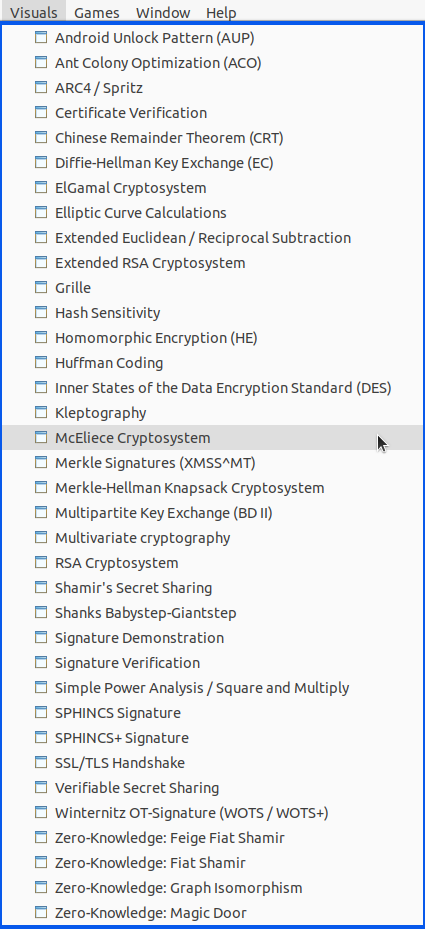

The JCT main menu Visuals (in the Default Perspective) has more than 30 entries. Each visualization explains in an extensive and graphical way how a cryptographic algorithm or protocol works. This is the part of JCT where most of the work went in (as these visuals were built from scratch, while pure algorithms often were available before).
To construct visualizations a didactical concept has to be made and details of the algorithm have to be revealed. These details normally are not outputed if you only perform the algorithm and therefore only interested in the algorithm's result. The graphics are often inspired from the original papers or from the material of contributing lecturers.

The visualized algorithms can be clustered into different categories explaining
More cryptographic algorithms in JCT can be found at
Remark
A tabular overview about all cryptographic functions in all CrypTool programs including JCT can be found at the CrypTool website in the function overview.